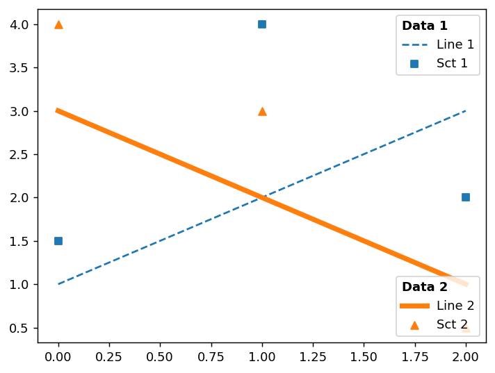
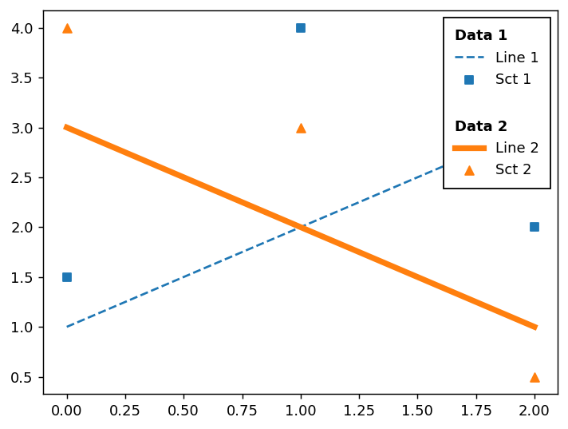
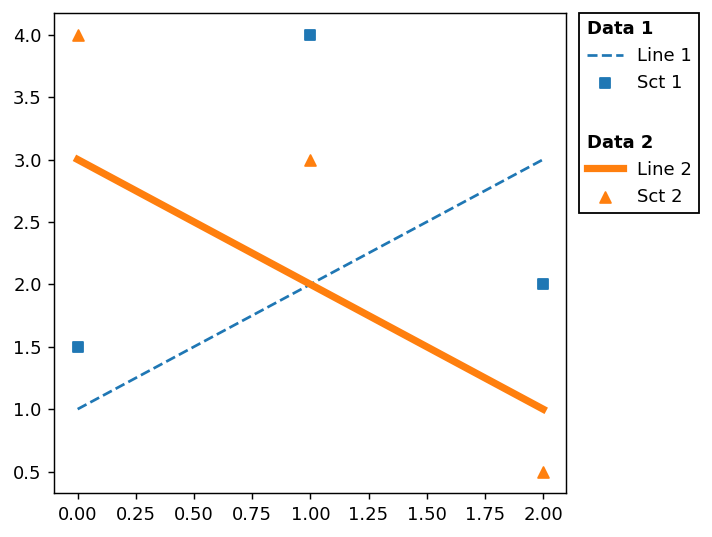

import matplotlib.pyplot as pltMy solution to https://twitter.com/zh1zh4n6/status/1759823358340825149
A legend is a collection of OffsetBox instances. You may collect multiple legends and rearange them to your need.
Example of multiple legends
We will start with a modified version of the multiple legend example from multiple-legends-on-the-same-axes
Note that multiple calls of ax.legend will replace an exising legend. To work around this, we manually add the legend artist to the axes using ax.add_artist.
#! echo: false
def plot(ax):
line1, = ax.plot([1, 2, 3], label="Line 1", linestyle='--')
line2, = ax.plot([3, 2, 1], label="Line 2", linewidth=4)
sct1 = ax.scatter([0, 1, 2], [1.5, 4, 2.], label="Sct 1", marker="s")
sct2 = ax.scatter([0, 1, 2], [4, 3, 0.5], label="Sct 2", marker="^")
return [line1, line2], [sct1, sct2]
title_props = dict(alignment="left",
title_fontproperties=dict(weight="bold"))
fig, ax = plt.subplots(num=1, clear=True)
[line1, line2], [sct1, sct2] = plot(ax)
# Create a legend for the first set.
first_legend = ax.legend(handles=[line1, sct1], loc='upper right',
title="Data 1", **title_props)
# Add the legend manually to the Axes.
ax.add_artist(first_legend)
# Create another legend for the second.
ax.legend(handles=[line2, sct2], loc='lower right',
title="Data 2", **title_props)<matplotlib.legend.Legend at 0x7fe8cdde6170>
Assembling multiple legends
In the modified version below, We will create multiple legend boxes, which will be assemebed into a single offset box. Note that we don’t want individual legends be displayed.
fig, ax = plt.subplots(num=2, clear=True)
[line1, line2], [sct1, sct2] = plot(ax)
# Legend is a collection of offset_box instances, wrapped around with
# AnchoredOffsetbox. We will create legends and collect the offset_box
# instances, but without showing them on the screen for now.
offsetboxes = []
for title, handles in [("Data 1", [line1, sct1]),
("Data 2", [line2, sct2])]:
leg = ax.legend(handles=handles,
title=title, **title_props)
offsetboxes.append(leg._legend_box)
ax.legend_.remove() # We don't want the legend to be displayed.We now have a list of offset-boxes. One can vertically pack boxes into a single box and place it on the corner of the axes, similar to a legend.
# We will add the collected offsetbox. They first need to be packed in a box.
# We use `VPacker` which will pack its childrent vertically.
from matplotlib.offsetbox import VPacker, AnchoredOffsetbox
vp = VPacker(children=offsetboxes, sep=15)
# Then this will be added to the axes using `AnchoredOffsetbox`, which can be
# placed just like legend.
ob = AnchoredOffsetbox(loc="upper right", bbox_to_anchor=ax.bbox, child=vp)
ax.add_artist(ob)
Of course it is possible to place the box outside the axes. There are several ways to do this. I will use axes_grid1 toolkit, which I am most familiar with.
We will start with a sample example.
fig, ax = plt.subplots(num=3, clear=True)
[line1, line2], [sct1, sct2] = plot(ax)
# Legend is a collection of offset_box instances, wrapped around with
# AnchoredOffsetbox. We will create legends and collect the offset_box
# instances, but without showing them on the screen for now.
offsetboxes = []
for title, handles in [("Data 1", [line1, sct1]),
("Data 2", [line2, sct2])]:
leg = ax.legend(handles=handles,
title=title, **title_props)
offsetboxes.append(leg._legend_box)
ax.legend_.remove() # We don't want the legend to be displayed.Placing the box outside of the main axes
We will create a new axes on the right side of the main axes. In addtion, we want the width of this axes set to the width of the offset box.
from mpl_toolkits.axes_grid1 import make_axes_locatable
from mpl_toolkits.axes_grid1.axes_size import MaxWidth
vp = VPacker(children=offsetboxes, sep=15)
divider = make_axes_locatable(ax)
artist_list = [] # we start with an empty artist list.
ax_right = divider.append_axes("right", size=MaxWidth(artist_list), pad=0.1)
ob = AnchoredOffsetbox(loc="upper left", bbox_to_anchor=ax_right.bbox, child=vp,
pad=0, borderpad=0)
ax_right.add_artist(ob)
# We add `ob` to the artist_list, so that the width of `ax_right` is adjusted.
artist_list.append(ob)
ax_right.set_axis_off()